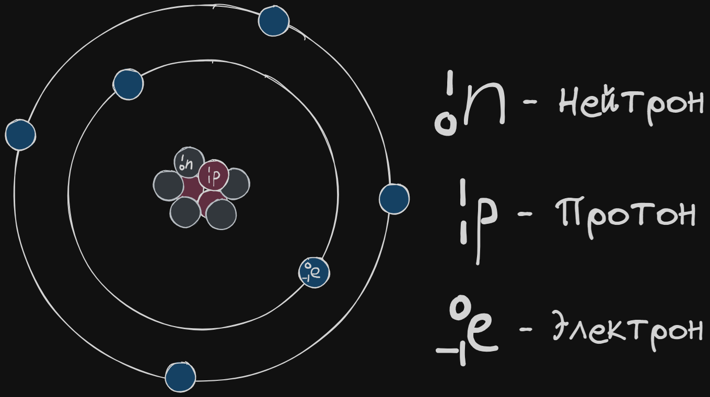
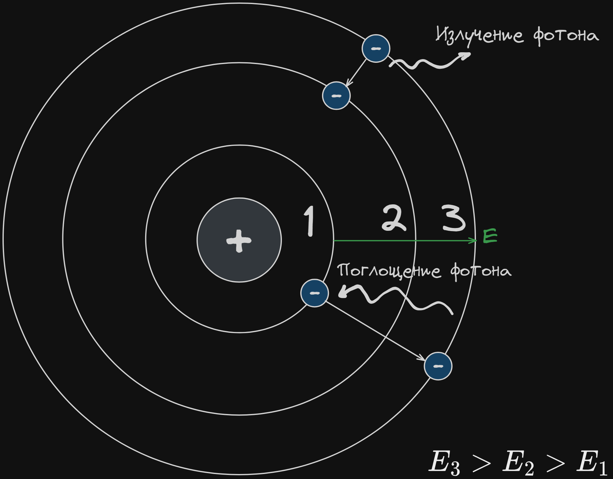
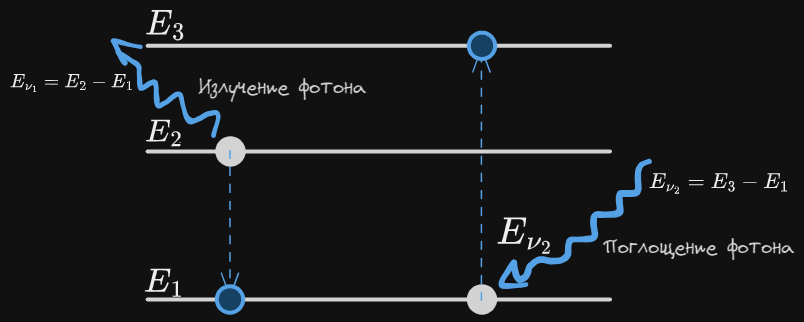

Связанные темы
Оказалось, что свет проявляет двойственную природу. В некоторых явлениях он ведёт себя как электромагнитная волна (дифракция, интерференция, дисперсия), а в некоторых ― как поток частиц, которые получили название фотонов.
Введение
Свет ― это поток фотонов. Фотоны обладают энергией и импульсом, но не обладают массой.
Длина волны фотона равна:
Где
― скорость света м/с;
― длина волны света м;
Энергия фотона прямо пропорциональна частоте света и равна
Где
― энергия фотона Дж;
― постоянная Планка равная Дж·с.
Импульс фотона равен:
Где:
p ― импульс фотона кг·м/с;
λ ― длина волны фотона м;
h ― постоянная Планка равная 6,6 ∙ 10-34 Дж·с.
В 1913 г. после опытов Резерфорда по рассеянию α-частиц была сформулирована планетарная модель Резерфорда. Согласно планетарной модели, отрицательно заряженные легкие электроны движутся вокруг положительно заряженного массивного ядра атома.
Планетарная модель атома Резерфорда

Модель Резерфорда подтверждалась экспериментально, однако находилась в противоречии с классической электродинамикой. Согласно законам электродинамики, отрицательно заряженный электрон, который движется с ускорением (в данном случае ― центростремительным ускорением вокруг ядра) должен излучать электромагнитные волны (свет) и терять энергию. Таким образом, согласно классической электродинамике, электрон очень быстро должен был упасть на ядро, а атомы не могли быть стабильными. Чтобы разрешить это противоречие Нильс Бор ввел ряд постулатов.
Постулаты Бора
-
Электрон, вращаясь вокруг ядра, может находиться только на стационарных орбитах. Вращаясь на стационарной орбите, электрон не испускает свет, и не теряет энергию.
-
Электрон испускает свет, только переходя с уровня с большей энергией на уровень с меньшей энергией. Поглощая свет, электрон переходит с уровня с меньшей энергией на уровень с большей энергией.
Энергия фотона, который излучается (или поглощается) при переходя электрона с уровня на уровень, равна разности энергий этих уровней:
Где
Ev ― энергия фотона, Дж или эВ;
Ek ― энергия электрона до того, как он поглотил или излучил фотон, Дж или эВ;
Em ― энергия электрона после того, как он поглотил или излучил фотон, Дж или эВ.
Энергия атомов и фотонов выражается в джоулях Дж или электронвольтах: 1 эВ = Дж.
Переход электронов с уровня на уровень в планетарной модели атома:

Так как подобное изображение уровней громоздко, в задачах принято показать энергетические уровни расположенные линейно друг над другом:

Поскольку энергия фотона прямо пропорциональна его частоте, по частоте поглощенного или излученного кванта света, можно определить с какого на какой уровень переходил электрон:
― частота фотона, который поглощается (или излучается) при переходе с уровня k на уровень m, Гц;
h ― постоянная Планка равная Дж·с;
― энергия электрона до того, как он поглотил или излучил фотон, Дж;
― энергия электрона после того, как он поглотил или излучил фотон, Дж.
Химические элементы отличаются количеством протонов в ядре ― а, следовательно, и электронов, вращающихся вокруг ядра. Поэтому у каждого химического элемента уникальный набор энергетических уровней, на которых могут находиться электроны. Переходя с одного уровня на другой, электроны излучают строго определенную порцию энергии ― т. е. квант с определенной длиной волны. Измерив длину волны фотонов, которые испускает разогретый атомарный газ, можно определить природу этого газа.
Энергетические уровни атома водорода
Энергию уровней атомов водорода может быть записан как
Где:
En ― энергия электрона в атоме водорода, находящегося на уровне n, эВ;
n ― номер уровня;
–13,6 эВ ― энергия ионизации, т. е. энергия, которую необходимо затратить, чтобы оторвать электрон от атома.
Ионизация
Ионизация — это процесс покидания электроном ядра при поглощении достаточного количества энергии.
Рассмотрим электрон, находящийся на 1 орбитали в атоме водорода. Энергия этого уровня Е = –13,6 эВ. Это значит, что если сообщать электрону как минимум 13,6 эВ энергии, он переместится на нулевой уровень – расстояние от ядра, на котором электрон может вырваться от сил, притягивающих его обратно. Следовательно, получив такую энергию, электрон покидает ядро, иными словами — ионизируется.
Минимальная энергия, которая требуется на ионизацию, всегда равна энергии уровня, на котором находится электрон (для первого уровня в атоме водорода: 13,6 эВ; для второго: 3,4 эВ и так далее).
Если электрон поглотит фотон с энергией большей, чем требуется на ионизацию, то часть энергии будет потрачена на ионизацию, а остатки – на кинетическую энергию электрона вдали от ядра:
Где
― частота фотона, который поглощается электроном и вызывает ионизацию, Гц;
h ― постоянная Планка равная Дж·с;
― минимальная энергия, необходимая для ионизации с данного уровня, Дж.
― кинетическая энергия электрона вдали от ядра, Дж;